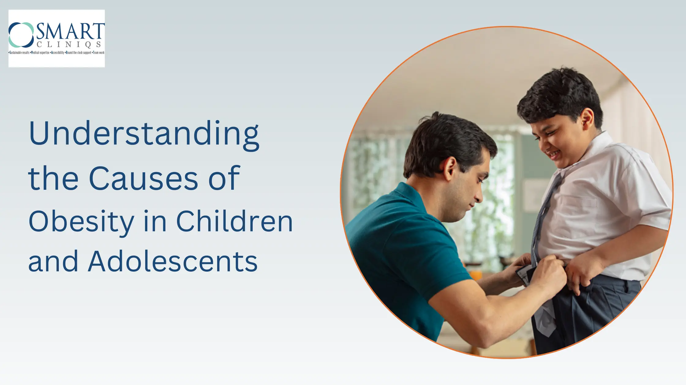

World Diabetes Day and Children’s Day: Reflecting on Health and Hope
World Diabetes day and Children’s day, wow what a coincidence!! Not sure what to say , do I start with Diabetes and India, making of an Asian auto-destructive society or a B’Day celeberations of our own Chaha Nehru!!. Gone are those days when we used to celeberate children’s day with lots of pomp and show, having fun at school, picnics planned by our parents and a get together with family and friends…Its appears to be a mere day of rememberance with no emotional strings attached. Its also heartbreaking to learn that Type-I diabetes is on a rise in India. Article in todays HT, “Children below 13 yrs prone to Type-I Diabetes” also narrates this sad story. Sexual abuse to the school kids also is a concern, we need to educate our kids against this social evil and gard and protect them.
With all the negativity and darkness around , I still have a ray of hope and positivity for our Type II Diabetics.. Yess.. Metabolic Surgery for Diabetes is here to stay. We have seen close to 85% resolution in select patients with type –II Diabetics. Would request all my friends and colleagues suffering from DM, to consider surgery as a safe an definitive corrective option for this deadly disease.
This World Diabetes Day, take action towards better health. Learn more about how metabolic surgery can offer hope for Type-II diabetes and stay informed about preventing and managing diabetes.
Stay fit, Stay Young!!
Back to Blog